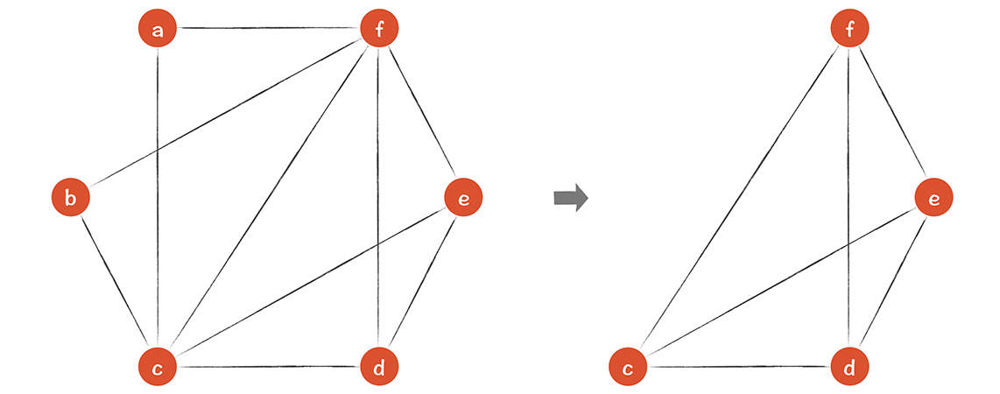

- 00 开篇词 为什么你要学习编译原理？.md.html
- 01 理解代码：编译器的前端技术.md.html
- 02 正则文法和有限自动机：纯手工打造词法分析器.md.html
- 03 语法分析（一）：纯手工打造公式计算器.md.html
- 04 语法分析（二）：解决二元表达式中的难点.md.html
- 05 语法分析（三）：实现一门简单的脚本语言.md.html
- 06 编译器前端工具（一）：用Antlr生成词法、语法分析器.md.html
- 07 编译器前端工具（二）：用Antlr重构脚本语言.md.html
- 08 作用域和生存期：实现块作用域和函数.md.html
- 09 面向对象：实现数据和方法的封装.md.html
- 10 闭包： 理解了原理，它就不反直觉了.md.html
- 11 语义分析（上）：如何建立一个完善的类型系统？.md.html
- 12 语义分析（下）：如何做上下文相关情况的处理？.md.html
- 13 继承和多态：面向对象运行期的动态特性.md.html
- 14 前端技术应用（一）：如何透明地支持数据库分库分表？.md.html
- 15 前端技术应用（二）：如何设计一个报表工具？.md.html
- 16 NFA和DFA：如何自己实现一个正则表达式工具？.md.html
- 17 First和Follow集合：用LL算法推演一个实例.md.html
- 18 移进和规约：用LR算法推演一个实例.md.html
- 19 案例总结与热点问题答疑：对于左递归的语法，为什么我的推导不是左递归的？.md.html
- 20 高效运行：编译器的后端技术.md.html
- 21 运行时机制：突破现象看本质，透过语法看运行时.md.html
- 22 生成汇编代码（一）：汇编语言其实不难学.md.html
- 23 生成汇编代码（二）：把脚本编译成可执行文件.md.html
- 24 中间代码：兼容不同的语言和硬件.md.html
- 25 后端技术的重用：LLVM不仅仅让你高效.md.html
- 26 生成IR：实现静态编译的语言.md.html
- 27 代码优化：为什么你的代码比他的更高效？.md.html
- 28 数据流分析：你写的程序，它更懂.md.html
- 29 目标代码的生成和优化（一）：如何适应各种硬件架构？.md.html
- 30 目标代码的生成和优化（二）：如何适应各种硬件架构？.md.html
- 31 内存计算：对海量数据做计算，到底可以有多快？.md.html
- 32 字节码生成：为什么Spring技术很强大？.md.html
- 33 垃圾收集：能否不停下整个世界？.md.html
- 34 运行时优化：即时编译的原理和作用.md.html
- 35 案例总结与热点问题答疑：后端部分真的比前端部分难吗？.md.html
- 36 当前技术的发展趋势以及其对编译技术的影响.md.html
- 37 云编程：云计算会如何改变编程模式？.md.html
- 38 元编程：一边写程序，一边写语言.md.html
- 加餐 汇编代码编程与栈帧管理.md.html
- 用户故事 因为热爱，所以坚持.md.html
- 第二季回归 这次，我们一起实战解析真实世界的编译器.md.html
- 结束语 用程序语言，推动这个世界的演化.md.html
- 捐赠
29 目标代码的生成和优化（一）：如何适应各种硬件架构？
在编译器的后端，我们要能够针对不同的计算机硬件，生成优化的代码。在23讲，我曾带你试着生成过汇编代码，但当时生成汇编代码的逻辑是比较幼稚的，一个正式的编译器后端，代码生成部分需要考虑得更加严密才可以。
那么具体要考虑哪些问题呢？其实主要有三点：
指令的选择。同样一个功能，可以用不同的指令或指令序列来完成，而我们需要选择比较优化的方案。
寄存器分配。每款CPU的寄存器都是有限的，我们要有效地利用它。
指令重排序。计算执行的次序会影响所生成的代码的效率。在不影响运行结果的情况下，我们要通过代码重排序获得更高的效率。
我会用两节课的时间，带你对这三点问题建立直观认识，然后，我还会介绍LLVM的实现策略。这样一来，你会对目标代码的生成，建立比较清晰的顶层认知，甚至可以尝试去实现自己的算法。
接下来，我们针对第一个问题，聊一聊为什么需要选择指令，以及如何选择指令。
选择正确的指令
你可能会问：我们为什么非要关注指令的选择呢？我来做个假设。
如果我们不考虑目标代码的性能，可以按照非常机械的方式翻译代码。比如，我们可以制定一个代码翻译的模板，把形如“a := b + c”的代码都翻译成下面的汇编代码：
mov b, r0 //把b装入寄存器r0
add c, r0 //把c加到r0上
mov r0, a //把r0存入a
那么，下面两句代码：
a := b + c
d := a + e
将被机械地翻译成：
mov b, r0
add c, r0
mov r0, a
mov a, r0
add e, r0
mov r0, d
你可以从上面这段代码中看到，第4行其实是多余的，因为r0的值就是a，不用再装载一遍了。另外，如果后面的代码不会用到a（也就是说a只是个临时变量），那么第3行也是多余的。
这种算法很幼稚，正确性没有问题，但代码量太大，代价太高。所以我们最好用聪明一点儿的算法来生成更加优化的代码。这是我们要做指令选择的原因之一。
做指令选择的第二个原因是，实现同一种功能可以使用多种指令，特别是CISC指令集（可替代的选择很多，但各自有适用的场景）。
对于某个CPU来说，完成同样的任务可以采用不同的指令。比如，实现“a := a + 1”，可以生成三条代码：
mov a, r0
add $1, r0
mov r0, a
也可以直接用一行代码，采用inc指令，而我们要看看用哪种方法总体代价最低：
inc a
第二个例子，把r0寄存器置为0，也可以有多个方法：
mov $0, r0 //赋值为立即数0
xor r0, r0 //异或操作
sub r0, r0 //用自身的值去减
...
再比如，a * 7可以用 a< - a实现：首先移位3位，相当于乘8，然后再减去一次a，就相当于乘以7。虽然用了两条指令，但是，可能消耗的总的时钟周期更少。
在这里我想再次强调一下，无论是为了生成更简短的代码，还是从多种可能的指令中选择最优的，我们确实需要关注指令的选择。那么，我们做指令选择的思路是什么呢？目前最成熟的算法都是基于树覆盖的方法，我通过一个例子带你了解一下，什么是树覆盖算法。
a[i] = b这个表达式的意思是，给数组a的第i个元素赋值为b。假设a和b都是栈里的本地变量，i是放在寄存器ri中。这个表达式可以用一个AST表示。

你可能觉得这棵树看着像AST，但又不大像，那是因为里面有mem节点（意思是存入内存）、mov节点、栈指针(fp)。它可以算作低级（low-level）AST，是一种IR的表达方式，有时被称为结构化IR。这个AST里面包含了丰富的运行时的细节信息，相当于把LLVM的IR用树结构来表示了。你可以把一个基本块的指令都画成这样的树状结构。
基于这棵树，我们可以翻译成汇编代码：
load M[fp+a], r1 //取出数组开头的地址，放入r1，fp是栈桢的指针，a是地址的偏移量
addi 4, r2 //把4加载到r2
mul ri, r2 //把ri的值乘到r2上，即i*4，即数组元素的偏移量，每个元素4字节
add r2, r1 //把r2加到r1上，也就是算出a[i]的地址
load M[fp+b], r2 //把b的值加载到r2寄存器
store r2, M[r1] //把r2写入地址为r1的内存
在这里，我用了一种假想的汇编代码，跟LLVM IR有点儿像，但更简化、易读：

注意，我们生成的汇编代码还是比较精简的。如果采用比较幼稚的方法，逐个树节点进行翻译，代码会很多，你可以手工翻译试试看。
用树覆盖的方法可以大大减少代码量，其中用橙色的线包围的部分被形象地叫做一个瓦片(tiling)，那些包含了操作符的瓦片，就可以转化成一条指令。每个瓦片可以覆盖多个节点，所以生成的指令比较少。

那我们是用什么来做瓦片的呢？原来，每条机器指令，都会对应IR的一些模式（Pattern），可以表示成一些小的树，而这些小树就可以当作瓦片：

我们的算法可以遍历AST，遇到上面的模式，就可以生成对应的指令。以load指令为例，它有几个模式：任意一个节点加上一个常量就行，这相当于汇编语言中的间接地址访问；或者mem下直接就是一个常量就行，这相当于是直接地址访问。最后，地址值还可以由下级子节点计算出来。
所以，从一棵AST生成代码的过程，就是用上面这些小树去匹配一棵大树，并把整个大树覆盖的过程，所以叫做树覆盖算法。2、4、5、6、8、9这几个节点依次生成汇编代码。
要注意的是，覆盖方式可能会有多个，比如下面这个覆盖方式，相比之前的结果，它在8和9两个瓦片上是有区别的：
生成的汇编代码最后两句也不同：
load M[fp+a], r1 //取出数组开头的地址，放入r1，fp是栈桢的指针，a是地址的偏移量
addi 4, r2 //把4加载到r2
mul ri, r2 //把ri的值乘到r2上，即i*4，即数组元素的偏移量，每个元素4字节
add r2, r1 //把r2加到r1上，也就是算出a[i]的地址
addi fp+b, r2 //把fp+b的值加载到r2寄存器
movm M[r2], M[r1] //把地址为r2到值拷贝到地址为r1内存里
你可以体会一下，这两个覆盖方式的差别：
对于瓦片8中的加法运算，一个当做了间接地址的计算，一个就是当成加法；
对于根节点的操作，一个翻译成从store，把寄存器中的b的值写入到内存。一个翻译成movm指令，直接在内存之间拷贝值。至于这两种翻译方法哪种更好，比较总体的性能哪个更高就行了。
到目前为止，你已经直观地了解了为什么要进行指令选择，以及最常用的树覆盖方法了。当然了，树覆盖算法有很多，比如Maximal Munch算法、动态规划算法、树文法等，LLVM也有自己的算法。
简单地说一下Maximal Munch算法。Maximal Munch直译成中文，是每次尽量咬一大口的意思。具体来说，就是从树根开始，每次挑一个能覆盖最多节点的瓦片，这样就形成几棵子树。对每棵子树也都用相同的策略，这样会使得生成的指令是最少的。注意，指令的顺序要反过来，按照深度优先的策略，先是叶子，再是树根。这个算法是Optimal的算法。
Optimal被翻译成最佳，我不太赞正这种翻译方法，翻译成“较优”会比较合适，它指的是在局部，相邻的两个瓦片不可能连接成代价更低的瓦片。覆盖算法除了Optimal的还有Optimum的，Optimum是全局最优化的状态，就是代码总体的代价是最低的。
关于其他算法的细节在本节课就不展开了，因为根据我的经验，在学指令选择时，最重要的还是建立图形化的、直观的理解，理解什么是瓦片，如何覆盖会得到最优的结果。
接下来，我们继续探讨开篇提到的第二个问题：寄存器分配。
分配寄存器
寄存器优化的任务是：最大程度地利用寄存器，但不要超过寄存器总数量的限制。
因为我们生成IR时，是不知道目标机器的信息的，也就不知道目标机器到底有几个寄存器可以用，所以我们在IR中可以使用无限个临时变量，每个临时变量都代表一个寄存器。
现在既然要生成针对目标机器的代码，也就知道这些信息了，那么就要把原来的IR改写一下，以便使用寄存器时不超标。
那么寄存器优化的原理是什么呢？我用一个例子带你了解一下。
下图左边的IR中，a、d、f这三个临时变量不会同时出现。假设a和d在这个代码块之后成了死变量，那么这三个变量可以共用同一个寄存器，就像右边显示的那样：

实际上，这三行代码是对“b + c + e + 10”这个表达式的翻译，所以a和d都是在转换为IR时引入的中间变量，用完就不用了。这和在23讲，我们把8个参数以及一个本地变量相加时，只用了一个寄存器来一直保存累加结果，是一样的。
所以，通过这个例子，你可以直观地理解寄存器共享的原则：如果存在两个临时变量a和b，它们在整个程序执行过程中，最多只有一个变量是活跃的，那么这两个变量可以共享同一个寄存器。
在27和28讲中，你已经学过了如何做变量的活跃性分析，所以你可以很容易分析出，在任何一个程序点，活跃变量的集合。然后，你再看一下，哪些变量从来没有出现在同一个集合中就行。看看下面的这个图：

上图中，凡是出现在同一个花括号里的变量，都不能共享寄存器，因为它们在某个时刻是同时活跃的。那a到f，哪些变量从来没碰到过呢？我们再画一个图来寻找一下。
下图中，每个临时变量作为一个节点，如果两个变量同时存在过，就画一条边。这样形成的图，叫做寄存器干扰图(Register Interference Graph, RIG)。在这张图里，凡是没有连线的两个变量，就可以分配到同一个寄存器，例如，a和b，b和d，a和d，b和e，a和e。

那么问题来了：针对这个程序，我们一共需要几个寄存器？怎么分配呢？
一个比较常用的算法是图染色算法：只要两个节点之间有连线，节点就染成不同的颜色。最后所需要的最少颜色，就是所需要的寄存器的数量。我画了两个染色方案，都是需要4种颜色：
不过我们是手工染色的，那么如何用算法来染色呢？假如一共有4个寄存器，我们想用算法知道寄存器是否够用？应该如何染色？
染色算法很简单。如果想知道k个寄存器够不够用，你只需要找到一个少于k条边的节点，把它从图中去掉。接着再找下一个少于k条边的节点，再去掉。如果最后整个图都被删掉了，那么这个图一定可以用k种颜色来染色。

为什么呢？因为如果一个图（蓝色边的）是能用k种颜色染色的，那么再加上一个节点，它的边的数量少于k个，比如是n，那么这个大一点儿的图（橙色边的）还是可以用k种颜色染色的。道理很简单，因为加进来的节点的边数少于k个，所以一定能找到一个颜色，与这个点的n个邻居都不相同。
所以，我们把刚才一个个去掉节点的顺序反过来，把一个个节点依次加到图上，每加上一个，就找一个它的邻居没有用的颜色来染色就行了。整个方法简单易行。
但是，如果所需要寄存器比实际寄存器的数量多，该怎么办呢？当然是用栈了。这个问题就是寄存器溢出（Register Spilling），溢出到栈里去，我在21讲关于运行时机制时提到过，像本地变量、参数、返回值等，都尽量用寄存器，如果寄存器不够用，那就放到栈里。另外再说一下，无论放在寄存器里，还是栈里，都是活动记录的组成部分，所以活动记录这个概念比栈桢更广义。
还是拿上面的例子来说，如果只有3个寄存器，那么要计算一下3个寄存器够不够用。我们先把a和b从图中去掉：

这时你发现，剩下的4个节点，每个节点都有3个邻居。所以，3个寄存器肯定不够用，必须要溢出一个去。我们可以选择让f保存在栈里，把f去掉以后，剩下的c，d，e可以用3种颜色成功染色。
这就结束了吗？当然没有。f虽然被保存到了栈里，但每次使用它的时候，都要load到一个临时变量，也就是寄存器中。每次保存f，也都要用一个临时变量写入到内存。所以，我们要把原来的代码修改一下，把每个使用f的地方，都加上一条load或save指令，以便在使用f的时候把f放到寄存器，用完后再写回内存。修改后的CFG如下：

因为原来有4个地方用到了f，所以我们引入了f1到f4四个临时变量。这样的话，总的临时变量反而变多了，从6个到了9个。不过没关系，虽然临时变量更多了，但这几个临时变量的生存期都很短，图里带有f的活跃变量集合，比之前少多了。所以，即使有9个临时变量，也能用三种颜色染色，如下图所示：

最后，在选择把哪个变量溢出的时候，你实际上是要有所选择的。你最好选择使用次数最少的变量。在程序内循环中的变量，就最好不要溢出，因为每次循环都会用到它们，还是放在寄存器里性能更高。
目前为止，代码生成中的第二项重要工作，分配寄存器就概要地讲完了。我留给你一段时间消化本节课的内容，在下一讲，我会接着讲指令重排序和LLVM的实现。
课程小结
目标代码生成过程中有三个关键知识点：指令选择、寄存器分配和指令重排序，本节课，我讲了前两个，期望能帮你理解这两个问题的实质，让你对指令选择和寄存器分配这两个问题建立直观理解。这样你再去研究不同的算法时，脑海里会有这两个概念的顶层的、图形化的认识，事半功倍。与此同时，本节课我希望你记住几个要点如下：
相同的IR可以由不同的机器指令序列来实现。你要理解瓦片为什么长那个样子，并且在大脑里建立用瓦片覆盖一棵AST的直观印象，最好具备多种覆盖方式，从而把这个问题由抽象变得具象。
寄存器分配是编译器必须要做的一项工作，它把可以使用无限多寄存器的IR，变成了满足物理寄存器数量的IR，超出的要溢出到内存中保管。染色算法是其中一个可行的算法。
一课一思
关于指令选择，你是否知道其他的例子，让同一个功能可以用不同的指令实现？欢迎在留言区分享你的经验。
最后，感谢你的阅读，如果这篇文章让你有所收获，也欢迎你将它分享给更多的朋友。
© 2019 - 2023 Liangliang Lee. Powered by gin and hexo-theme-book.